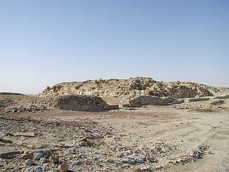
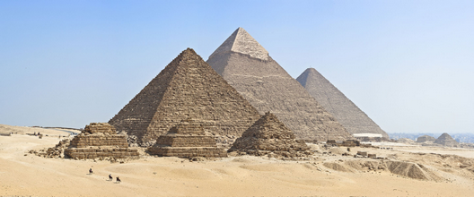
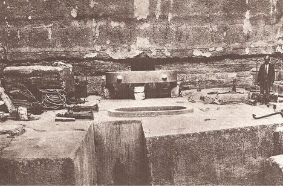

Historical development
The design of Egyptian pyramids, especially the stepped designs of the oldest pyramids (Pyramid of Zoser at Saqqara, 2600 BCE), may have been an evolution from the ziggurats built in Mesopotamia, dated to as early as 4000. Preceded by assumed earlier sites in the Eastern Sahara, tumuli with megalithic monuments developed as early as 4700 BCE in the Saharan region of Niger. It is also possible that these megalithic monuments in the Saharan region of Niger and the Eastern Sahara may have served as antecedents for the mastabas and pyramids of ancient Egypt. During Predynastic Egypt, tumuli were present at various locations (e.g., Naqada, Helwan). From the time of the Early Dynastic Period , Egyptians with sufficient means were buried in bench-like structures known as mastabas. At Saqqara, Mastaba 3808, dating from the latter part of the 1st Dynasty, was discovered to contain a large, independently built step-pyramid-like structure enclosed within the outer palace facade mastaba. Archaeological remains and inscriptions suggest there may have been other similar structures dating to this period.
Pyramid symbolism
The shape of Egyptian pyramids is thought to represent the primordial mound from which the Egyptians believed the earth was created. The shape of a pyramid is also thought to be representative of the descending rays of the sun, and most pyramids were faced with polished, highly reflective white limestone, in order to give them a brilliant appearance when viewed from a distance. Pyramids were often also named in ways that referred to solar luminescence. For example, the formal name of the Bent Pyramid at Dahshur was The Southern Shining Pyramid, and that of Senusret II at El Lahun was Senusret Shines. While it is generally agreed that pyramids were burial monuments, there is continued disagreement on the particular theological principles that might have given rise to them. One suggestion is that they were designed as a type of "resurrection machine." The Egyptians believed the dark area of the night sky around which the stars appear to revolve was the physical gateway into the heavens. One of the narrow shafts that extend from the main burial chamber through the entire body of the Great Pyramid points directly towards the center of this part of the sky. This suggests the pyramid may have been designed to serve as a means to magically launch the deceased pharaoh's soul directly into the abode of the gods.
Number and location of pyramids
In 1842, Karl Richard Lepsius produced the first modern list of pyramids now known as the Lepsius list of pyramids in which he counted 67. A great many more have since been discovered. At least 118 Egyptian pyramids have been identified. The location of Pyramid 29 which Lepsius called the "Headless Pyramid", was lost for a second time when the structure was buried by desert sands after Lepsius's survey. It was found again only during an archaeological dig conducted in 2008. Many pyramids are in a poor state of preservation or buried by desert sands. If visible at all, they may appear as little more than mounds of rubble. As a consequence, archaeologists are continuing to identify and study previously unknown pyramid structures. The most recent pyramid to be discovered was that of Sesheshet at Saqqara, mother of the Sixth Dynasty pharaoh Teti, announced on 11 November 2008.
Abu Rawash
Abu Rawash is the site of Egypt's most northerly pyramid (other than the ruins of Lepsius pyramid number one), the mostly ruined Pyramid of Djedefre, son and successor of Khufu. Originally it was thought that this pyramid had never been completed, but the current archaeological consensus is that not only was it completed, but that it was originally about the same size as the Pyramid of Menkaure, which would have placed it among the half-dozen or so largest pyramids in Egypt. Its location adjacent to a major crossroads made it an easy source of stone. Quarrying, which began in Roman times, has left little apart from about fifteen courses of stone superimposed upon the natural hillock that formed part of the pyramid's core. A small adjacent satellite pyramid is in a better state of preservation.
Giza
The Giza Plateau is the location of the Pyramid of Khufu (also known as the "Great Pyramid" and the "Pyramid of Cheops"), the somewhat smaller Pyramid of Khafre (or Chephren), the relatively modest-sized Pyramid of Menkaure (or Mykerinus), along with a number of smaller satellite edifices known as "Queen's pyramids", and the Great Sphinx of Giza. Of the three, only Khafre's pyramid retains part of its original polished limestone casing, near its apex. This pyramid appears larger than the adjacent Khufu pyramid by virtue of its more elevated location, and the steeper angle of inclination of its construction—it is, in fact, smaller in both height and volume. The Giza pyramid complex has been a popular tourist destination since antiquity and was popularized in Hellenistic times when the Great Pyramid was listed by Antipater of Sidon as one of the Seven Wonders of the Ancient World. Today it is the only one of those wonders still in existence.
Zawyet el-Aryan
This site, halfway between Giza and Abusir is the location for two unfinished Old Kingdom pyramids. The northern structure's owner is believed to be pharaoh Nebka, while the southern structure, known as the Layer pyramid may be attributable to the Third Dynasty pharaoh Khaba, a close successor of Sekhemkhet If this attribution is correct, Khaba's short reign could explain the seemingly unfinished state of this step pyramid. Today it stands around 17 m (56 ft) high; had it been completed, it is likely to have exceeded 40 m (130 ft).
